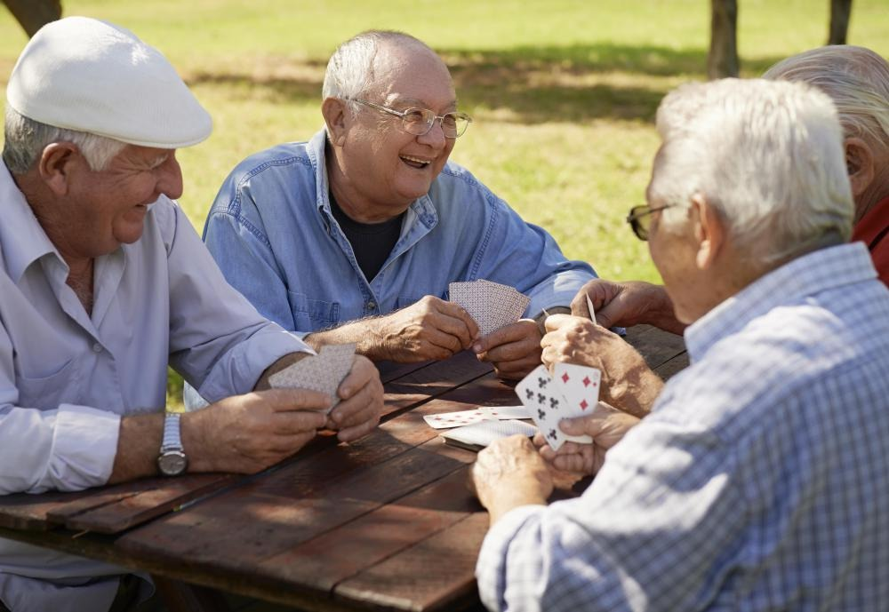

Indoor Games For Old People
1. Chess and Checkers:
It will help for brain sharping and keeping memory and chess seems to prevent Alzheimer’s for old people
What You Will Need :
- A chess board
How To play :
Chess is a remarkable game. The rules are deceptively straightforward and easy to learn, but the skills involved are immense. It’s easy to play chess for decades, and never truly stop learning the finer points of the game. Chess is all about strategy, problem-solving, and thinking on your feet, making it a great game to keep seniors engaged and mentally active, while also having fun. Checkers, a modified version of the game with fewer pieces and simpler rules, is also a great option
No. of participants : 2
2.Word Games (Scrabble, Boggle, Crossword Puzzles, etc.) :
Word games are fun and exciting, but they are also incredibly multi-faceted tools for sharpening our minds. Playing an active word game, like Scrabble or Boggle, is a great way to promote critical thinking, creativity, problem solving, and memory. Even doing a more passive word puzzle together – like a crossword, or a wordsearch – is a great way to help older adults stay focused and improve their recall
What You Will Need :
- Paper
- Pen
No. of participants : 1 Or 2
3. Card Games :
Card games are a great way think spontaneously, have fun, and enjoy one another’s company, and there are plenty of games that can work for any number of players, from two to ten or more. Many older adults grew up playing card games, so be sure to ask them what games they enjoy. Some older adults may prefer more active, thoughtful games, like bridge or poker. For others, it may be more fun to play a more straightforward game, like blackjack or war. Or, look into alternative card games that go beyond the Traditional deck, such as Uno.
What You Will Need :
- A pack of cards
No. of participants : 3 or 4
4. Board Games (Chutes and Ladders, Connect Four, Othello, etc.) :
Playing a board game is a great way to get lots of people involved at once. While some games may have too many moving pieces or rules for elderly players, simple and straightforward games can be a great way for older adults to get engaged and think strategically. Think about dice games like Yahtzee, or visual strategy games like Connect Four or Othello. If your senior can’t move their own pieces, this is a great way to get younger kids involved, as most will probably be more than happy to help out
What You Will Need :
- A game board
- Dice
No. of participants : 2 or 3
5.Jigsaw Puzzles :
A game doesn’t have to be competitive to be fun! Doing a jigsaw puzzle together can be a great way to get everyone on the same side, as everyone works together to achieve the same goal. Jigsaw puzzles are a great way to work on focus, concentration, and memory. They involve a lot of strategy, planning, problem-solving, and recall, without seeming stressful or overwhelming.
What You Will Need :
- A puzzle board
How To play :
No. of participants : 1